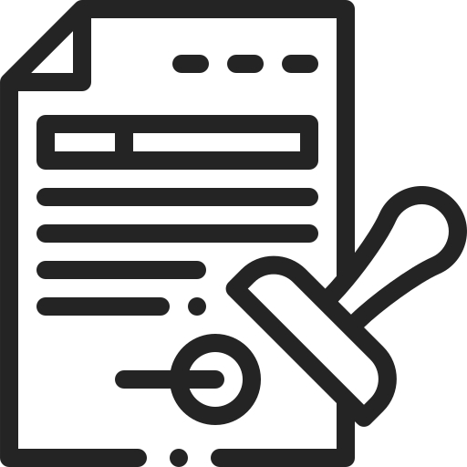

| Les conditions de travail 2019 | (PDF) Les conditions de travail en 2019 |
| Une étude de cas dans l’industrie : la relation entre la qualité du travail, la performance et la santé au travail. AUZOULT, Laurent, GILIBERT, Daniel, 2017 | (PDF) Une étude de cas dans l'industrie : la relation entre la qualité du travail, la performance et la santé au travail. 2017 |
| Guide de la QVT. Ministère de l’action et des Comptes publics. Anact. Edition 2019 | (PDF) Guide QVT 2019 |
| 10 questions sur la qualité de vie au travail. Anact, 2016. 18 p. | (Publication Anact) 10 questions sur la qualité devie au travail. 2016 |
| La revue n°1 des conditions de travail, octobre 2014. Réseau Anact. L’organisation du travail à l’épreuve des risques psychosociaux | Revue n°1 des conditions de travail. 2014 |
| La qualité de vie au travail : un levier de compétitivité Refonder les organisations du travail BOURDU, Emilie, PÉRÉTIER, Marie-Madeleine, Martin Richer Préface de Jean-Dominique Senard, Paris, Presses des Mines, 2016 | (PDF) La QVT : un levier de compétitivité. 2016 |
| Enquête DARES, Questionnaire de l’enquête Conditions de travail, 2019 | (Enquête) Conditions de travail : édition 2019 | DARES |
| Regard d’experts Mozart Consulting & Groupe APICIL. Édition 2018 - IBET© (Indice de Bien-Être au Travail) | (PDF) Indice de Bien-Être au Travail© (IBET) 2018. VF |
| HAL : La banalisation du harcèlement en milieu de travail : une vision de promotion de la santé, ANDRÉ, Noémie, 2020 | (Archives ouverte thèse) La banalisation du harcèlement en milieu de travail : une vision de promotion de la santé. 2020 |
| Chiffres ou statistiques Mozart Consulting | (PDF) Indice de bien-être au travail (IBET). 2018 |
| Baromètre National QVT dans l'ESS, Ministère de la Transition Écologique et Solidaire et CSA, 2020 | (PDF) Restitution résultats 3e édition baromètre QVT ESS. 2020 |
| INRS, ANACT, Ministère du Travail, de l’emploi et de la formation professionnelle | (PDF)Guide d'aide à la prévention. Le syndrome d'épuisement professionnel ou burnout. Mieux comprendre pour mieux agir. 2015 |
| Projet de loi dialogue social et emploi.pdf 2015 | (PDF) Fiche 4 Mieux prendre en compte la qualité de vie au travail |
| Plans santé au travail, document PDF, PST3 | (PDF) Plans de santé au travail (PST) |
| Les infos clés sur le travail, l’emploi et le salaire. ARTE. 2019 | Les infos clé sur le trvail, l'emploi et le salaire. ARTE. 2019 |

Documentation
open source et médias

Documentation open-source
Médias
| Cash investigation présenté par Elise LUCET, journaliste, rédactrice en chef, présentatrice de télévision et productrice française. Documentaire France Télévision, 2017. Travail : ton univers impitoyable (Intégrale) | Cash investigation - Travail : ton univers impitoyable (Intégrale). 2017 |
| Série documentaire en 4 épisodes de Stan NEUMANN, auteur et documentariste français. ARTE France, 2020. Les infos clés sur le monde ouvrier aujourd'hui | Les infos clés sur le monde ouvrier aujourd'hui | ARTE. 2020 |
| Documentaire réalisé par Jean-Marc PHILIBERT, journaliste et enquêteur Documentaire Société, 2020. Burn-out, flicage en entreprise : quand le travail va trop loin | Burn out, flicage en entreprise : quand le travail va trop loin ! 2020 |
| Épisode de la série de Kona SHIOMASHI, auteur japonaise écrivaine et illustratrice. Documentaire ARTE, 2018. Japon, ou la mort par surmenage | Japon, ou la mort par surmenage | Gagner sa vie | ARTE. 2018 |
| Envoyé spécial, 2019. Le travail qui casse | Envoyé spécial (France 2). Le travail qui casse - 11 avril 2019 |
| Le monde d’en face. France 5. 14 février 2018. La mécanique du burn out | France 5. Le monde en face - La mécanique burnout. 14/2/18 |


Copyright 2021. Rapport d'étonnement conçu et réalisé par Kimly TEA,
M1UX Expert en stratégie digitale, pour le programme DC Start,
Digital Campus Paris.
Remerciements à tous les participants qui ont contribués à la vie de mon projet, aux experts de la santé au travail, aux personnes ayant témoignées et participées au sondage, à mes proches, à Robert ALAUX, notre professeur, à Marion VERGNAUD, notre coach, et à toute l'équipe pédagogique DC Paris.
Remerciements à tous les participants qui ont contribués à la vie de mon projet, aux experts de la santé au travail, aux personnes ayant témoignées et participées au sondage, à mes proches, à Robert ALAUX, notre professeur, à Marion VERGNAUD, notre coach, et à toute l'équipe pédagogique DC Paris.